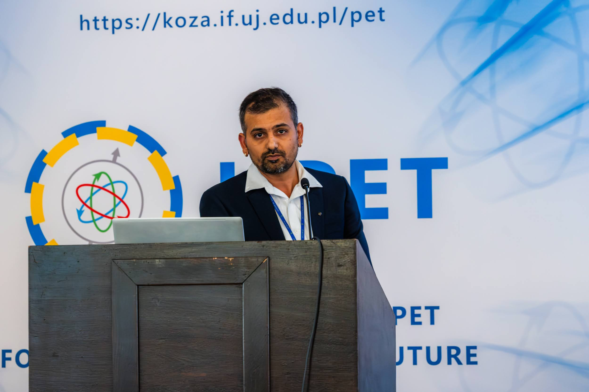

◎
Positronium lifetime imaging
Reconstruction of spatially resolved positronium lifetime and decay-constant images as candidate quantitative molecular-imaging biomarkers.
Molecular Imaging · Iterative Image Reconstruction · Nuclear Physics
I develop quantitative imaging methods at the intersection of nuclear medicine, positron emission tomography, positronium lifetime imaging and Monte Carlo/Geant 4 simulation. My research connects fundamental radiation interactions with practical reconstruction algorithms and experimentally validated molecular images.
profile.jpg
Profile
My current research work focusses on development, and implementation of iterative reconstruction algorithms for PET and positronium lifetime image reconstruction. I develop algorithms for list-mode event processing, system-matrix modelling, time-of-flight weighting, statistical reconstruction, lifetime estimation and quantitative validation using simulations, phantoms and experimental detector data.
My doctoral research investigated exotic nuclear shapes at high-spin in neutron-deficient Xe and I nuclei. I planned and executed in-beam gamma-ray spectroscopy experiments and nuclear-level lifetime measurements to study octupole correlations, quasiparticle alignment, band crossing, and band termination. This background in experimental nuclear physics now informs my work on detector response, radiation interaction, and image reconstruction.
I also have experience in nuclear-target fabrication, rolling, and evaporation methods, and characterisation techniques, SEM, EDS, EDXRF, XRD and RBS.
Research themes
My research combines experimental nuclear physics, computational modelling and quantitative imaging.
Reconstruction of spatially resolved positronium lifetime and decay-constant images as candidate quantitative molecular-imaging biomarkers.
Iterative list-mode reconstruction, MLEM and penalised methods, system matrices, sensitivity modelling, time-of-flight kernels and quantitative validation.
Simulation of detector response, prompt and annihilation photons, coincidence processing, scatter effects and data–simulation comparison.
High-spin gamma-ray spectroscopy, nuclear-level lifetimes, octupole correlations, rotational bands and neutron-deficient nuclei around mass 120.
ROI-based lifetime estimation, SNR and CNR analysis, phantom studies, CT/activity overlays, spatial resolution and uncertainty assessment.
Python, C++, ROOT, GPU-enabled reconstruction, Siddon ray tracing, NIfTI workflows and publication-ready scientific visualisation.
Career
Jagiellonian University, Kraków, Poland. Research in molecular imaging, PET reconstruction, positronium lifetime imaging and simulation within J-PET.
Jagiellonian University, Kraków, Poland. PET data analysis, reconstruction algorithm development, simulations and experimental validation.
University of Delhi. Thesis: Search for exotic nuclear shapes at high spins in neutron-deficient Xe and I nuclei with mass A < 120.
Department of Physics and Astrophysics, University of Delhi.
Research output
A selection spanning molecular imaging, nuclear structure, lifetime measurements and target development. Edit this list as new papers are published.
Physics in Medicine and Biology, 71, 075026.
Scientific Reports, 16, 16230.
Zeitschrift für Medizinische Physik.
Chinese Physics C, 49, 084006.
Physica Scripta, 99, 065308.
Vacuum, 224, 113135.
Chinese Physics C, 47, 084002.
Applied Radiation and Isotopes, 199, 110860.
Nuclear Instruments and Methods in Physics Research A, 985, 164667.
Nuclear Instruments and Methods in Physics Research A, 983, 164586.
For a complete and continuously updated publication record, visit the ORCID profile linked above.
International engagement
Selected places connected with research appointments, collaborations, invited talks and conference presentations.
Selected talks and presentations
Presentation on current research in positronium lifetime imaging and iterative reconstruction.
Poster presentation in molecular imaging.
Oral contribution at the Jagiellonian University symposium.
Developing Iterative Positronium Imaging with J-PET, Jagiellonian University.
Development of Iterative Positronium Lifetime Image Reconstruction for J-PET.
Fabrication and Characterisation of a High-Purity 93Nb Target on Lead Backing.
I welcome conversations related to PET reconstruction, positronium lifetime imaging, Monte Carlo simulation, nuclear spectroscopy and quantitative image analysis.